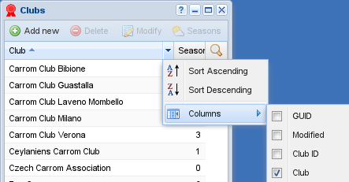

Basic entities¶
All basic entities share a similar looking window, that shows fourteen records at a time in a grid.
At the top there's a menu specific to the grid, where some items may be disabled, for example when it is mandatory to have a selection to execute a particular action. In general, you can find almost the same items in the contextual menu you get with a right click of the mouse on a record in the grid.
At the bottom there's a pagination toolbar with which the complete dataset may be browsed. The actual number of records shown in a single page can be changed: this makes the selection of players to be registered to a tourney easier, for example.
Hint
You can maximize the vertical dimension of any window by double clicking on the title bar. Double clicking on the page size value will adjust the number to fit current window size.

Visible columns selection¶
The grid by default shows a minimal set of fields, possibly just one, the description of the entity. Clicking on the columns title reorder the items on that particular field, toggling between ascending and descending order.
On the right border of each column's title there is a button that brings a popup menu that allows selection of the sort order of the column, or which columns are visible or not.